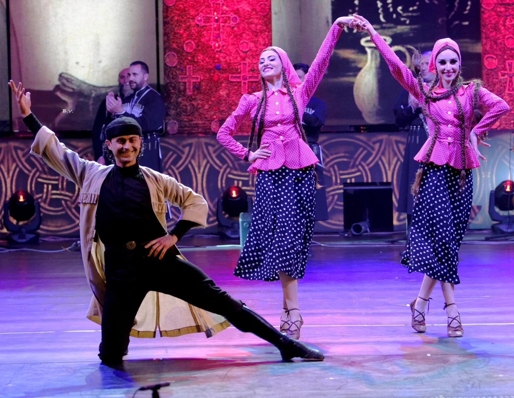

ცეკვა ქართული ჩვენს დრომდე მოღწეული, სადარბაზო, სატრფიალო, რომანტიკული შინაარსის ცეკვაა, რომელიც სრულდებოდა სამეფო კარზე.
კინტოური ქალაქური ტიპის ცეკვათა რიცხვს განეკუთვნება და თავისი არსით ძველი ქალაქის ცხოვრებას ასახავს, და თბილისის ვაჭრების, სახელს უკავშირდება.
ძველი ქართული საზეიმო ხალხური ცეკვა, სამსართულიანი ფერხული რომელიც სრულდება გურიაში ორპირული სამხმიანი სიმღერის თანხლებით.
საბრძოლო ხასიათის ეს ცეკვა, საწყისს, გურიის/აჭარის რეგიონიდან იღებს. ხორუმი ცეკვაში განსახიერებული სიმბოლოა ქართველ მებრძოლთა ვაჟკაცობისა და დიდებულებისა.
ქართველი ქალის კდემამოსილების ამსახველი ნარნარი ცეკვა, რომელიც გვიჩვენებს ქართველი ქალების ემოციებსა და გრძნობებს. მას ,რა თქმა უნდა, მხოლოდ ქალები ასრულებენ.
ეს არის საზეიმო სარიტუალო ხასიათის საფერხულო ცეკვა, რომელიც სრულდება სიმღერის თანხლებით და აჩვენებს სვანეთის რეგიონში მცხოვრები ხალხის ძლიერ ხასიათს.
ცეკვა ომში დაღუპული გმირების უკვდასაყოფად სრულდება დაჭრილის სიმღერისა და მოცეკვავეთა ანტურაჟით, შემდეგ ცეკვვა თანდათან გადადის საზეიმო განწყობაზე. ხალხი ზეიმობს გამარჯვებას მტერზე და მართავს სახალხო დღესასწაულს.
განდაგანა აჭარული წარმოშობის ცეკვაა. ასრულებს ძირითადად ქალ-ვაჟი, თუმცა არსებობს მისი ჯგუფური შესრულების ვარიანტიც. ის გამოირჩევა ულამაზესი, მკვეთრი ფერის კოსტიუმებით.
„მთიებში“ წარმოდგენილია ზეიმი მთაში. ახალგაზრდა ვაჟები თავბრუდამხვევი ცეცხლოვანი ილეთებით და გოგონები სინარნარით აწონებენ ერთმანეთს თავს. პაექრობაში ჩართულია მომღერალთა გუნდი, რითაც ერთიანობაში დაუვიწყარ სანახაობას ქმნიან.
12.ცეკვა ქართლ-კახური

ოსეთის რეგიონიდან იღებს სათავეს. ეს ცეკვა წყვილთა ნელ და ზუსტ მოძრაობებზეა აგებული. ამ ცეკვის მთავარი სილამაზე მოცეკვავეთა მწკრივების რიტმულ, ერთიან ტრიალს ეფუძნება.
ლამაზი ქალის სიყვარულს ერთმანეს ეცილება ორი ვაჟკაცი. მათი პაექრობა თავიანთ მეგობრებთან ერთად გადაიზრდება ხმლის კვეთებით ორთაბრძოლაში, რომელიც ღებულობს ომის ხასიათს. აქ ხაზგასმულია ქალის მანდილის პატივისცემა
ქართლ-კახური კლასიკური, საგუნდო, პოლიფონიური, საგმირო ხასიათის სუფრული ცეკვა-სიმღერაა. 1977 წელს NASA-ას მიერ გაშვებულ ავტომატურ სადგურებზე სწორედ ამ ცეკვის სიმღერაა ჩაწერილი.